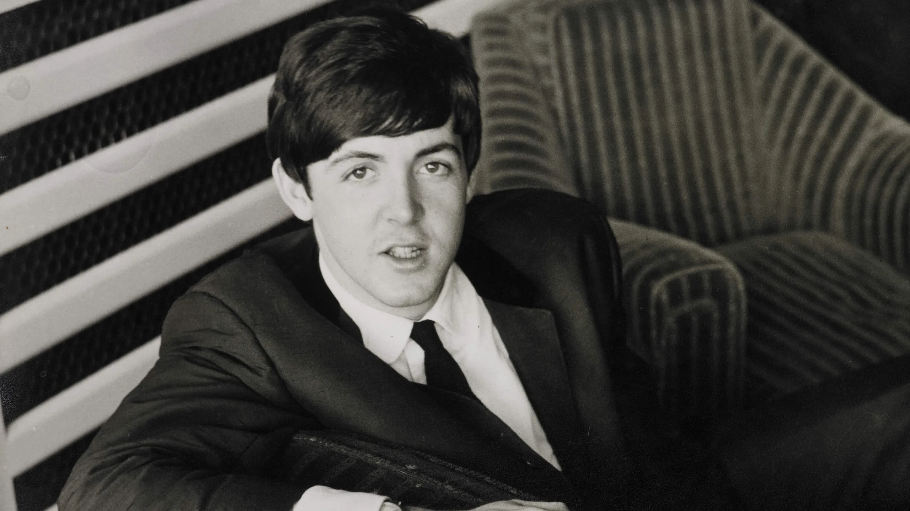
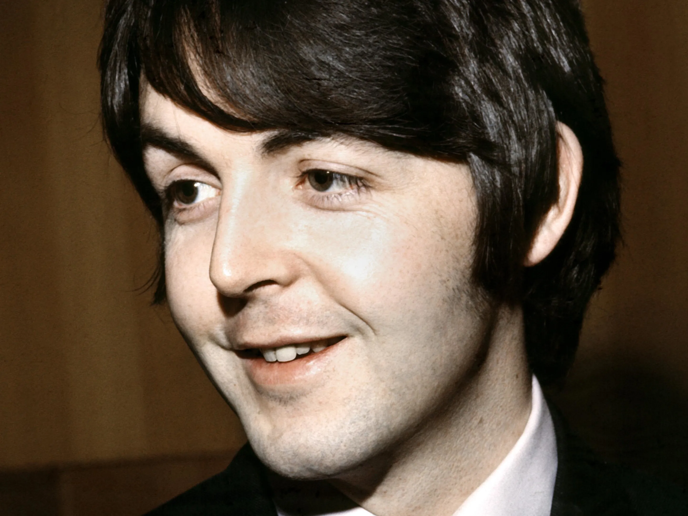
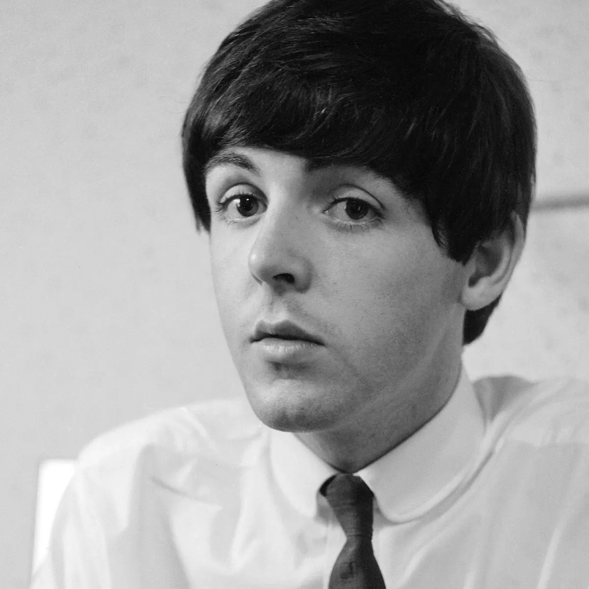
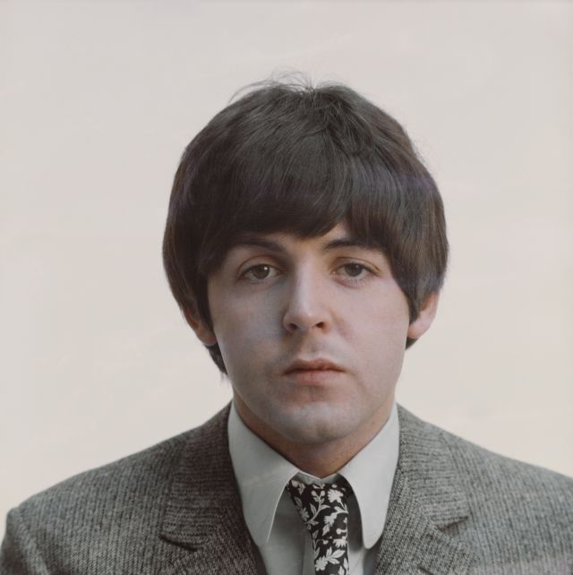

Paul McCartney (nació el 18 de junio de 1942) es un cantante / compositor inglés y un miembro clave de los Beatles. Después de que los Beatles se separaron en 1970, continuó su exitosa carrera en solitario, grabando con una variedad de artistas, incluido su grupo 'The Wings'. Según el Libro Guinness de los Récords, es el artista más vendi do de todos los tiempos.Paul McCartney nació en Liverpool en 1942 y se interesó en la música desde una edad temprana.En su adolescencia, era un cantante y compositor en ciernes y se convirtió en un buen amigo de John Lennon y más tarde de George Harrison ; esto era para demostrar el núcleo de los Beatles.A principios de la década de 1960, The Beatles comenzó tocando en clubes de Alemani a y Liverpool. Fue en el Cavern Club en Liverpool, donde fueron vistos por el gerente Brian Epstein.Les aseguró su primer contrato de grabación importante con Parlophone (después de que muchas otras compañías discográficas como Decca los rechazaron)Estaba tocando en el club Cavern, de lo que Paul y John Lennon se dieron cuenta de que la mayoría de los grupos solo estaban haciendo versiones de portada, esto los inspiró a escribir su propia música y esta fue una característica de las grabaciones de los Beatles durante los próximos diez años.